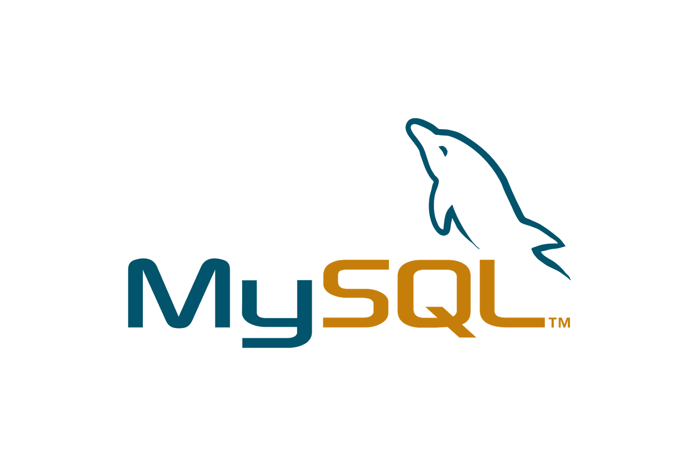
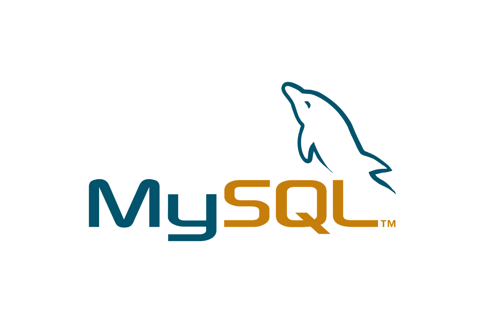

SteveAOlsen.com
Please scroll down...
Let me design your dream website for You
Professional Development, Personal Design with an artistic touch
Portfolio below, Resume Above.
Skills


 


Portfolio
JavaScript
JavaScript is one of the most used languages in the world. Highly versatile as a pseudo-object
oriented programming (OOP) language, it integrates well with browsers and loves HTML and CSS, the code
languages that make up the content and style of a web page.
JavaScript works well to calculate numbers and display information on dynamic web pages. Instead
of me telling you, take a look at a program I wrote that does just that. Click here to see my
Birthday/Age Calculator
The Birthday/Age Calculator took more work than might meet the eye. For example, one might think
that by simply subtracting dates from a current date we get a working program. Unfortunately if that
was the case a person who was born on January 20, 2000, running the program on January 19, 2018,
would be shown as 18 years, 0 months and -1 days old. To correct this issue I used a series of
if/else statements which exchange the equivalent amount of time (-1 year for +12 months)
when necessary. I even coded it to determine the current month and created
if/else statements to trade the correct number of days for months containing 31, 30 and 28 days. Don't
use it on February 29th on a leap year or your computer will explode.
Enough Games! We have work to do, and that is why you need someone like me to help you do it. Let's
take a look at another program I wrote that will help us with that. I call
it...the To Do List, I've always prided myself on originality. Click here to see my
To Do List
The To Do List uses home-made functions which make use of the built in methods of shift and push in
JavaScript. I've created a variable which is an array that simply displays the list. The push method
is used to add the item in the prompt to the array and the shift method removes the first item in the
array.
I love the Office...not my current sales job, the TV show. I designed this soundboard to provide minutes of
entertainment to any fellow fans of the show. Credit to Wes Bos; the format is similar to his first challenge
on the 30 day JavaScript Challenge. Aside from the different formatting
and differed code, I designed mine to work with a keyboard button push or by clicking on the buttons, which Wes'
version does not do. Enjoy!
The Office Soundboard
New Clock that I made based off of Wes Bos' Project, but this one was done a liitle differently:
JavaScript & CSS Clock
Looking to get more experience with JavaScript objects, I sought out a project where I could use an array of
objects and return corresponding data in response to user prompts. I’m a huge history nerd, so a presidential
database with terms and names seemed fitting. Take a look. Just plug in a number (obviously between 1 and 45)
and you’ll get some info on that president.
Presidents of the United States of America
jQuery
Animations can really set your website apart from the others. jQuery is the most widely used JavaScript
library and is great for animations amongst other things. JavaScript libraries are sections of prewritten
code that can be called with simplified commands. John Resig created jQuery in 2006 and it is still heavily
used today. If you like the fade-in effect on this page you will be a fan of jQuery.
Here's another look at some code that I put together to demonstrate jQuery's abilities:
jQuery Animation Example
SQL
SQL, or Structured Query Language, was created in 1974 and is still used today to create, modify, add and
remove data from databases. The importance of being able to navigate information in today's marketplace
is essential to anyone looking to make use of this vast resource. Not to mention data grows exponentially
and companies like Facebook and Google make millions from studying and distributing this information. With
enough information and the right know-how, you can learn almost anything. Financial companies
make market predictions, farmers can predict weather patterns and governments can predict elections. Data
is pretty powerful stuff and SQL is key in using it.
Complements to SQL like Tableau and MySQL allow intuitive presentation and access of data. Here is a link to
some SQL queries I wrote for a Zombie Status Report project in one of my bootcamps. The database includes
two tables which are modified and joined, and more. This isn't a working database, just a sample of some SQL code
I wrote for the project. Check out the entire repository and the finished project on my GitHub page.
SQL Zombie Report - Example of Code
PHP
PHP is a server side scripting language that can be used as a general programming language. My knowledge of PHP
is fairly basic, but a good programmer knows how to make use of any type of code. My Contact page is an HTML
file that has a few basic text boxes. I've used a PHP template and modified it to integrate with my HTML
page. The PHP file validates the data and takes the user to an error page if there are any issues. If the data
entered meets the parameters the PHP file uses a web service to format the info and send it to my Gmail account.
Try it out and give me some feedback on the site. Contact Me Page
Bootstrap
The Bootstrap Framework is a collection of JavaScript and CSS files, usually loaded externally,
that includes thousands of preloaded tools a front-end web developer can make use of. Given the
wide range of devices that people use to view websites and the screen size ranges, Bootstrap
automatically comfigures the screen and HTML elements to best fit a computer, tablet or smart phone.
Because of this, a majority of professionally designed websites employ the Bootstrap Framework.
In fact, the website you are on right now is running on the Bootstrap Framework.
Bootstrap is a front-end tool and is free and easy to use. Take a look at a simple Bootstrap page I've
created using a template from W3 Schools. Try this link on different devices and watch how Bootstrap
re-formats the content. Click here to see my Bootstrap Framework Example:
Bootstrap Framework
Here's another quick project I had to whip up for an interview. The project uses HTML, CSS, JavaScript and
Bootstrap to prompt a user for thier name in a modal window, then greet them accordingly. The JavaScript checks
for errors such as an empty submission, or a name containing numbers, and gives the user an error message if either
is detected. Enjoy!
Bootstrap Name Thing Example
C# & .NET
C# is a powerful programming language adapted by Microsoft from the C programming language. It was
developed around 2000 within Microsoft's .NET Framework. C# is a true object oriented programming language
and uses methods, loops, variables, objects, etc. My C# and .NET experience is more limited than my JavaScript
experience, but here is a quick demo project I've built to demonstrate my understanding of the language.
The following program is a fitness app that runs in the terminal of any .NET compatible software. It prompts the
user for workout information, error checks data, and responds to the user based on the level of activity. The
program will track your activity until you exit.
To run FitnessFrog extract the zip file and place them files inside it in the same folder. Download an IDE (I recommend
Visaul Studio Code from Microsoft) and open the folder in the IDE. Right click the folder and select
"Open in Terminal". After that just type "dotnet run" in the terminal and press enter. Have fun and happy sweating.
FitnessFrog.zip
Other Things I Can Do
See GitHub Link
- Angular
- Web API
- DOM Modification
- TypeScript
- Data Validation
- Tableau & MySQL
- JSON & Authentication
- Web Hosting
- Plus I'm Always Learning More...